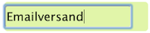
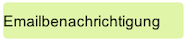
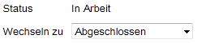

Product-Backlog-Item (Detailsicht)
Die Detailsicht eines Tickets zeigt alle enthaltenden Daten und ermöglicht es ebenfalls diese abzuändern.
Änderungen an den Feldern werden über den Button "Speichern" übernommen, bzw. über den Button "Abbrechen" verworfen.

Die Abbildung zeigt ein Ticket vom Typ "Feature", die Beschreibung gilt aber auch analog für Tickets der Ausprägung "Bug" und selbstdefinierte Tickettypen.
Allen Tickets gemein sind folgende Standardfelder.
Um ein Ticket umzubenennen klicken Sie einfach auf dessen Titel und bearbeiten diesen entsprechend.
Beispiel
Vorher:  |
Nachher:  |
Bestätigen Sie Ihre Eingabe mit der Enter-Taste (auch Return-Taste genannt) oder durch verlassen des Eingabefeldes.
Dieses Feld dient einer allgemeinen Kurzbeschreibung des Problems (Bug), bzw. der gewünschten Funktionalität (Feature).
Um einen Status zu wechseln, wählen Sie den entsprechenden Status aus, zu dem gewechselt werden soll

und klicken Sie anschließend auf um in den entsprechenden Status zu wechseln.
In diesem Feld werden Kriterien festgelegt, die für die Erfüllung dieses Tickets erfüllt werden müssen.
Um ein neues Kriterium hinzuzufügen, tragen Sie eine Kurzbeschreibung in das Eingabefeld neben der Kriterienliste ein und klicken auf den Button "Hinzufügen". Kriterien werden zurückgenommen indem sie aus der Liste selektiert werden und mit Klick auf den Button "Löschen" entfernt werden.
Dieses Feld bietet die Möglichkeit weitere Hinweise zur Erfüllung der Akzeptanzkriterien für den Entwickler zu hinterlegen.
Um einen neuen Hinweis aufzunehmen, tragen Sie eine Kurzbeschreibung in das Eingabefeld neben der Hinweisliste ein und klicken auf den Button "Hinzufügen". Hinweise werden entfernt, indem sie aus der Liste selektiert werden und mit Klick auf den Button "Löschen" entfernt werden.
Hier kann dem Ticket ein Aufwand zugewiesen werden. Für den Aufwand können nur Angaben im Bereich der natürlichen Zahlen gemacht werden.
Tickets müssen einem Sprint zugeordnet sein. Um diese Zuordnung zu verändern klicken Sie auf die Combobox und wählen den zutreffenden Sprint aus.
Created with the Personal Edition of HelpNDoc: Single source CHM, PDF, DOC and HTML Help creation